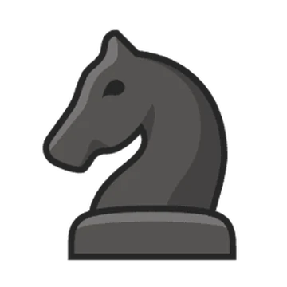
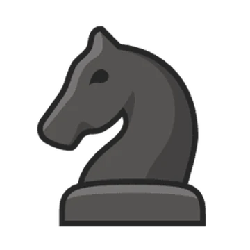

Szabályok
Lépések
Egy lépés azt jelenti, hogy a játékos a táblán lévő egyik figuráját – bizonyos szabályok szerint – egy másik mezőre
helyezi át. A másik mező lehet üres, vagy állhat rajta egy másik színű figura, amelyet ez a lépés eltávolít a
tábláról – ezt hívjuk ütésnek. A mezőn nem állhat azonos színű figura, azaz saját figurát nem lehet ütni.
A figurák mozgása
A különböző fajta figurák különböző szabályok szerint léphetnek:
Huszár
A huszár egyik irányba két mezőt, a másikba pedig egyet lép, az ábrán látható mezőkre. A huszár ugrik, azaz
akkor
is tud lépni, ha minden szomszédos mezőn áll másik figura (csak a célmezőn nem állhat azonos színű figura).
A huszár mindig ellentétes színű mezőre lép, mint ahonnan indult.
 

Király
A király a nyolc szomszédos mező valamelyikére léphet (a tábla szélén csak öt, a sarokban pedig három). A
királyra vonatkozó különleges szabályokról később lesz szó.

Gyalog
A gyalog csak a saját irányába léphet. A különböző színű gyalogok iránya ellentétes: mindig a másik játékos
oldala felé halad. A gyalog másképp lép, ha üt, és másképp, ha nem. Normál lépés esetén (ha nem üt) a haladási
irányában előre
egyenesen léphet egyet, illetve a kiindulási mezőjéről kettőt is (ha a közbülső mező is üres). Ütéskor átlósan
előre léphet egy mezőt (balra előre vagy jobbra előre). A gyalogok speciális lépéseiről később lesz szó.


Sakkszabály
Egy játékos sakkban van, ha az ellenfél le tudná ütni a játékos királyát. Nem szabad olyan lépést tenni, amellyel a
királyunk sakkba kerülne vagy sakkban maradna.
Speciális lépések
Sáncolás
A sáncolás egy speciális lépés, amely során egyszerre két figura mozog: a király és az egyik bástya. A lépés során
az alapsorban a sorrendjük megcserélődik, mintha átugornák egymást. Végrehajtása a következő: a király lép kettőt a
bástya felé, és ugyanabban a lépésben a bástya átugorja a királyt, és mellélép (arra a mezőre, amelyen a király
áthaladt). A sáncoláshoz a következő feltételeknek kell teljesülni:
- Sem a király, sem a kiválasztott bástya nem mozdulhatott még el a kiindulási helyéről.
- A király és a kiválasztott bástya között minden mezőnek üresnek kell lennie.
- A király nem lehet sakkban sem a kiindulási mezőn, sem a közbülsőn, sem az érkezési mezőn.
Gyalogátváltozás
Amikor a gyalog eléri az ellenfél alapsorát, azaz a tábla túlsó oldalát, akkor átalakul egy ugyanolyan színű,
szabadon választott tisztté (vezérré, bástyává, futóvá vagy huszárrá). Nemcsak leütött figurákat lehet választani,
tehát lehet egy játékosnak akár két vezére, három bástyája stb. is egyszerre. A leggyakoribb választás természetesen
a vezér.
Menet közbeni ütés (en passant)
gyalogoknak van még egy speciális lépése: a menet közbeni ütés (en passant ütés). Olyankor jöhet szóba, amikor egy
gyalog kettőt lépett; ekkor egy megfelelő helyen lévő ellentétes színű gyalog a következő lépésben leütheti úgy,
mintha az csak egyet lépett volna. Később ez a lehetőség megszűnik.
A játék kimenetele
Sakk-matt
Ha a soron következő játékos sakkban van, és nem tud szabályosan lépni, akkor mattról (sakk-mattról) beszélünk.
Ekkor véget ér a játék, és a mattot kapott játékos veszít, ellenfele pedig nyer.
Feladás
Egy játékos dönthet úgy, hogy feladja a játékot, ha úgy találja, hogy előbb-utóbb mattot fog kapni. Ilyenkor véget
ér a játék, és veszít a játékos (de nem kell kivárnia a mattot).
Döntetlen
A játék nemcsak valamely játékos győzelmével érhet véget, hanem lehet döntetlen is az eredmény, azaz hogy egyik fél
sem nyert. A játék végeredménye öt esetben lesz döntetlen:
Megegyezés: a játék során bármikor megegyezhetnek a játékosok döntetlenben. Például akkor, ha látják, hogy
előbb-utóbb a másik négy eset valamelyike fog fennállni.
Patt: a soron következő játékos nem tud lépni, de nincs sakkban. Lásd: Patt.
Nincs elegendő mattadó erő: olyan kevés figura maradt a táblán, hogy azokból lehetetlen mattot előállítani. Például
ha a két király egyedül maradt, vagy ha rajtuk kívül csak egyetlen futó vagy huszár maradt. Lásd az alapmattokat
lejjebb.
Ötven lépés szabálya: ha egymást követő ötven olyan lépéspár történik, amelyek között nem volt sem ütés, sem
gyaloglépés, akkor bármelyik játékos kérhet döntetlent a másik beleegyezése nélkül is.
Háromszori tükörkép: ha harmadszor jelenik meg ugyanaz az állás a táblán úgy, hogy ugyanaz lép, és ugyanazok a
lehetőségek (sáncolás, en passant), akkor bármelyik játékos kérhet döntetlent a másik beleegyezése nélkül is.


{kind=link}
{kind=link}
{kind=link}